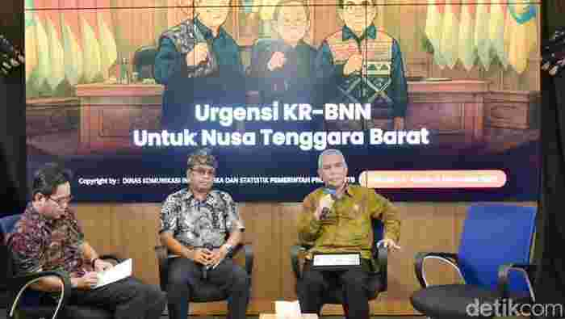

Kerja Sama Regional Bali, NTB, NTT Lokomotif Pertumbuhan Indonesia Timur
Mataram - Pemerintah Provinsi (Pemprov) NTB mendorong kolaborasi tiga provinsi Bali, NTB, dan NTT menjadi model kerja sama regional antar daerah jadi lokomotif pertumbuhan ekonomi baru di Indonesia. Ketiga provinsi ini diharapkan menjadi pusat pariwisata internasional dan penggerak kesejahteraan masyarakat di wilayah Indonesia Timur.
Kepala Badan Perencanaan Pembangunan Daerah (Bappeda) NTB Iswandi menjelaskan kerjasama regional Bali, NTB, dan NTT merupakan strategi mewujudkan pertumbuhan ekonomi daerah sesuai arahan pemerintah pusat.
"Gubernur NTB Lalu Muhamad Iqbal menargetkan akselerasi pertumbuhan ekonomi hingga 8 persen melalui kerjasama lintas wilayah yang konkret dan terukur. Nanti NTB akan menjadi tuan rumah pertemuan lanjutan pada bulan ini," ungkap dia saat Bincang Kamisan 'Urgensi Kerja Sama Regional Bali, Nusa Tenggara Barat dan Nusa Tenggara Timur (KR BNN) dalam mempercepat pertumbuhan ekonomi kawasan Indonesia Bagian Timur' pada, Kamis (6/11/2025).
Iswandi menjelaskan pertemuan ketiga Gubernur NTB Lalu Muhamad Iqbal, Gubernur Bali Wayan Koster, dan Gubernur NTT Emanuel Melkiades Laka Lena di Mataram menjadi tindak lanjut dari kesepakatan bersama antara tiga provinsi.
Sebelumnya, ketiga kepala daerah ini melakukan pertemuan di Bali dengan fokus kerja sama pada penyatuan arah pembangunan di Bali, NTB, NTT sebagai kawasan pariwisata dan ekonomi kreatif bertaraf internasional.
Menurut Iswandi, pulau Dewata akan berperan sebagai pusat pariwisata budaya. Sedangkan NTB sebagai pusat pariwisata petualangan, dan provinsi NTT sebagai pusat pariwisata bahari.
"Nanti ketiganya diikat oleh penguatan konektivitas darat, laut, dan udara agar mampu mendorong arus barang, jasa dan wisatawan secara efisien," ujarnya.
Kerja sama lintas provinsi itu Iswandi melanjutkan, bukan hanya fokus pada sektor pariwisata, tetapi juga menjadi instrumen penggerak lintas sektor. Bahkan, ada 15 komoditas pertanian seperti padi, bawang, sayur, dan buah-buahan serta 14 komoditas kelautan yang akan dikelola dalam kerangka perdagangan antarprovinsi.
"Jadi OPD harus mampu mentransformasi kepentingan lintas daerah, bukan hanya kepentingan sektoral. Kami ingin melihat neraca perdagangan yang sehat, di mana NTB, Bali, dan NTT saling melengkapi," tegasnya.
Kerja sama ini nantinya akan ditandai dengan penandatanganan dokumen resmi oleh tiga gubernur, yang menegaskan prinsip saling menguntungkan dan berorientasi jangka panjang.
Sekretaris Dinas Pariwisata NTB Mulki menyebut kolaborasi ini sebagai langkah strategis untuk mengembalikan semangat kebersamaan provinsi-provinsi eks "Sunda Kecil" dalam bentuk modern.
Mulki menjelaskan, Bali yang selama ini menyumbang sekitar 60 persen kunjungan wisatawan nasional diharapkan dapat memberikan multiplier effect positif bagi NTB dan NTT.
"Kami tidak sedang bersaing, tetapi berkolaborasi. Bali, NTB, dan NTT adalah tiga mutiara pariwisata Nusra yang saling menguatkan," ujarnya.
Mulki menjelaskan ada tiga konsep utama yang akan segera diwujudkan Integrated Promotion Tourism, Integrated Event Calendar dan Chance of Destination.
"Ini berupa fun trip lintas provinsi yang menghubungkan jalur wisata Bali, NTB dan NTT dalam satu paket perjalanan terpadu," katanya.
Selain pariwisata, kolaborasi ini juga menyasar sektor perdagangan antar daerah. Produksi masyarakat NTB, seperti hasil pertanian, perikanan, dan produk ekonomi kreatif, banyak dikonsumsi di Bali. Kerjasama ini pula diharapkan akan mampu saling memasok kebutuhan masing-masing wilayah agar saling menguntungkan.